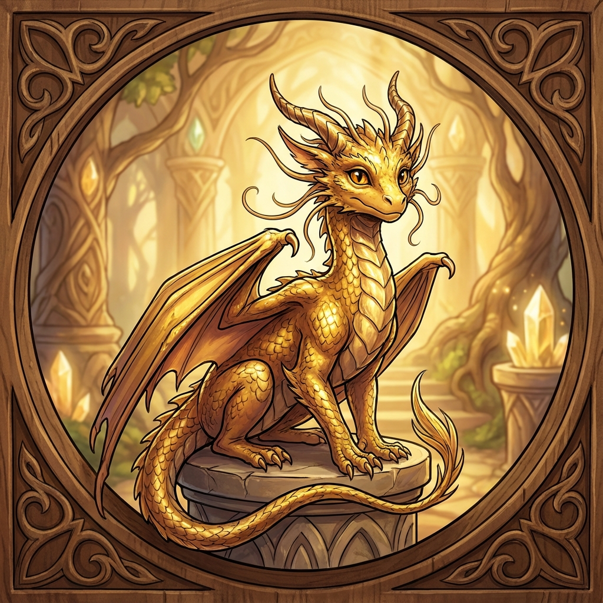

Sorrel (True Form)
Gold Dragon Wyrmling
Race: Gold Dragon
Age: Wyrmling (young but ancient wisdom)
Background
When the moment of truth arrives, Sorrel reveals their true nature as a gold dragon wyrmling. Despite their small size (cat-sized to small dog-sized), Sorrel radiates ancient wisdom and noble purpose. Gold dragons are legendary for their wisdom, justice, and protection of the innocent. Sorrel has been observing the party throughout their adventures, testing their character and worth. The revelation comes at a crucial moment when the party needs guidance or protection, showing that Everpeak Citadel has always had a guardian watching over it.
Personality
Noble, protective, wise beyond years. In true form, Sorrel's ancient draconic wisdom shines through while maintaining the cheerful, encouraging nature shown in halfling form. Deeply committed to justice and protecting the worthy. Patient teacher and guide. Takes joy in seeing mortals rise to challenges and grow in character.
Physical Appearance
Small majestic gold dragon wyrmling, roughly cat-sized. Brilliant golden scales that shimmer and gleam like precious metal, reflecting light beautifully. Intelligent, kind amber eyes that glow with inner wisdom. Elegant wings proportioned for size. Delicate horns and whiskers. Regal bearing despite diminutive stature. Warm golden glow emanates from scales naturally.
Role & Abilities
**Dragon Abilities:**
- **Breath Weapon:** Cone of fire or weakening gas
- **Draconic Presence:** Inspires courage in allies
- **Flight:** Elegant aerial maneuvering
- **Ancient Knowledge:** Vast historical knowledge
- **Shapechanger:** Can polymorph into humanoid forms
- **Darkvision:** 60 feet
- **Blindsight:** 10 feet
**Wyrmling Stats:**
- **AC:** 17 (natural armor)
- **HP:** 60 (8d8 + 24)
- **Speed:** 30 ft., fly 60 ft.
- **Alignment:** Lawful Good
- **Breath Weapon:** Cone of fire or weakening gas
- **Draconic Presence:** Inspires courage in allies
- **Flight:** Elegant aerial maneuvering
- **Ancient Knowledge:** Vast historical knowledge
- **Shapechanger:** Can polymorph into humanoid forms
- **Darkvision:** 60 feet
- **Blindsight:** 10 feet
**Wyrmling Stats:**
- **AC:** 17 (natural armor)
- **HP:** 60 (8d8 + 24)
- **Speed:** 30 ft., fly 60 ft.
- **Alignment:** Lawful Good
Equipment
- Natural draconic abilities
- No equipment needed
- Magical polymorph capability
- No equipment needed
- Magical polymorph capability